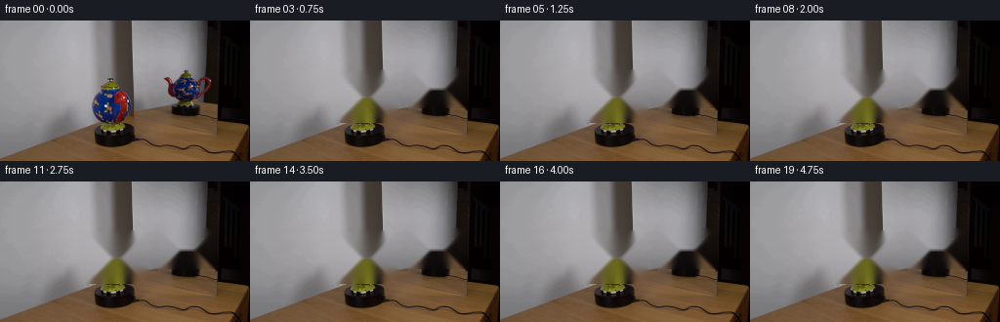
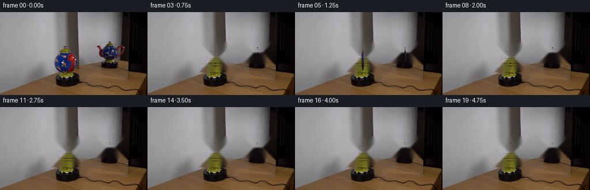
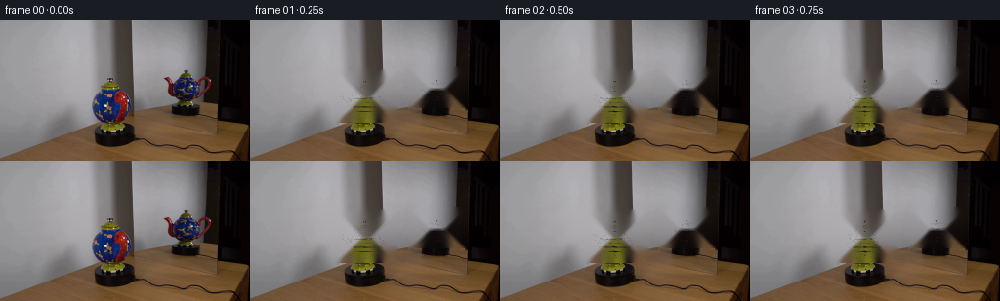

CODING AGENTS AS PIXEL WORLD MODELS
traex/DeepSeek-V4.1-Flash · 0122
点击播放 · 原生 RGB 像素
此结果可播放，但该运行尚未通过最终提交审核。页面展示不代表评测通过。
逐轮保存的候选
回放视频、检查图与代码变化。
每份候选均可单独播放。实际图片检查记录在下方工具轨迹中。
候选 01播放与检查图
点击播放 · 原生 RGB 像素

展开代码变化
--- 上一保存版本
+++ 本次保存版本
@@ -0,0 +1,524 @@
+from pathlib import Path
+
+import cv2
+import numpy as np
+from PIL import Image
+
+import artifact_io
+
+
+CASE = Path(__file__).resolve().parent
+WIDTH, HEIGHT = 256, 144
+FRAME_COUNT = 20
+FPS = 4
+SS = 3
+
+
+def sample_bilinear(image, x, y):
+ """Sample an RGB image at floating-point coordinates."""
+ h, w = image.shape[:2]
+ x = np.clip(x, 0, w - 1.001)
+ y = np.clip(y, 0, h - 1.001)
+ x0 = np.floor(x).astype(np.int32)
+ y0 = np.floor(y).astype(np.int32)
+ x1 = np.minimum(x0 + 1, w - 1)
+ y1 = np.minimum(y0 + 1, h - 1)
+ fx = (x - x0)[..., None]
+ fy = (y - y0)[..., None]
+ top = image[y0, x0] * (1.0 - fx) + image[y0, x1] * fx
+ bottom = image[y1, x0] * (1.0 - fx) + image[y1, x1] * fx
+ return top * (1.0 - fy) + bottom * fy
+
+
+def make_body_texture(source):
+ """Unwrap the visible porcelain and mirror it into a seamless atlas."""
+ tw, th = 512, 192
+ u = np.arange(tw, dtype=np.float32)
+ v = np.arange(th, dtype=np.float32)
+ theta = (u + 0.5) / tw * (2.0 * np.pi) - np.pi
+ vv = (v + 0.5) / th
+ theta_grid = theta[None, :]
+ v_grid = vv[:, None]
+
+ # The mirror side reuses the photographed half, so the hidden side keeps
+ # the same hand-painted family of motifs instead of becoming a flat color.
+ back = np.broadcast_to(np.cos(theta_grid) < 0.0, (th, tw))
+ source_theta = np.where(back, np.pi - theta_grid, theta_grid)
+ yy = (v_grid - 0.5) * 2.0
+ local_r = 19.0 * np.sqrt(np.clip(1.0 - yy * yy, 0.03, 1.0))
+ sx = 117.5 + local_r * np.sin(source_theta)
+ sy = 86.0 - yy * 17.0
+ texture = sample_bilinear(source.astype(np.float32), sx, sy)
+
+ # The real handle occupies the extreme right edge. Tone that red mass
+ # down before unwrapping so it does not become a stripe around the pot.
+ red = (texture[..., 0] > texture[..., 1] * 1.45) & (
+ texture[..., 0] > texture[..., 2] * 1.3
+ )
+ edge = np.abs(theta_grid) > 1.15
+ texture[red & edge] = texture[red & edge] * 0.38 + np.array(
+ [12.0, 28.0, 72.0], dtype=np.float32
+ ) * 0.62
+
+ # Mirror-side illumination is slightly cooler and less bright.
+ texture[back] *= 0.84
+ texture = cv2.GaussianBlur(texture.astype(np.float32), (0, 0), 0.55)
+
+ # Extend the photographed ornament into the previously unseen half with
+ # a few painted strokes, keeping a continuous, richly decorated surface.
+ rng = np.random.default_rng(122)
+ for _ in range(62):
+ cx = int(rng.integers(0, tw))
+ cy = int(rng.integers(18, th - 18))
+ radius = int(rng.integers(2, 6))
+ color = np.array(
+ rng.choice(
+ [
+ [132, 35, 27],
+ [45, 92, 35],
+ [176, 132, 43],
+ [220, 193, 119],
+ ]
+ ),
+ dtype=np.float32,
+ )
+ if not back[cy, cx]:
+ continue
+ cv2.circle(
+ texture,
+ (cx, cy),
+ radius,
+ tuple(float(c) for c in color),
+ -1,
+ lineType=cv2.LINE_AA,
+ )
+ if radius >= 4:
+ cv2.circle(
+ texture,
+ (cx, cy),
+ max(1, radius // 3),
+ (222.0, 181.0, 91.0),
+ -1,
+ lineType=cv2.LINE_AA,
+ )
+ texture = np.clip(texture, 0, 255)
+ return texture
+
+
+def make_clean_plate(source):
+ """Remove the photographed pot above the fixed black display bases."""
+ mask = np.zeros((HEIGHT, WIDTH), dtype=np.uint8)
+ cv2.rectangle(mask, (88, 51), (150, 105), 255, -1)
+ cv2.rectangle(mask, (163, 48), (221, 91), 255, -1)
+ mask = cv2.GaussianBlur(mask, (5, 5), 0.9)
+ mask = (mask > 40).astype(np.uint8) * 255
+ return cv2.inpaint(source, mask, 4, cv2.INPAINT_TELEA)
+
+
+def make_rotor_texture(source):
+ """Extract the visible painted stand and lid details as small color chips."""
+ return make_body_texture(source)
+
+
+class Mesh:
+ def __init__(self):
+ self.vertices = []
+ self.normals = []
+ self.uvs = []
+ self.colors = []
+ self.faces = []
+ self.textured = False
+
+ def add(self, vertices, normals, faces, uvs=None, colors=None):
+ offset = sum(len(v) for v in self.vertices)
+ self.vertices.append(np.asarray(vertices, dtype=np.float32))
+ self.normals.append(np.asarray(normals, dtype=np.float32))
+ self.faces.append(np.asarray(faces, dtype=np.int32) + offset)
+ if uvs is not None:
+ self.uvs.append(np.asarray(uvs, dtype=np.float32))
+ if colors is not None:
+ self.colors.append(np.asarray(colors, dtype=np.float32))
+
+ def finalize(self):
+ out = Mesh()
+ out.vertices = np.concatenate(self.vertices, axis=0)
+ out.normals = np.concatenate(self.normals, axis=0)
+ out.faces = np.concatenate(self.faces, axis=0)
+ out.uvs = np.concatenate(self.uvs, axis=0) if self.uvs else None
+ out.colors = np.concatenate(self.colors, axis=0) if self.colors else None
+ out.textured = self.uvs is not None
+ return out
+
+
+def lathe_mesh(profile, segments, color_fn=None, uv=False):
+ vertices = []
+ normals = []
+ uvs = []
+ colors = []
+ faces = []
+ angles = np.linspace(0.0, 2.0 * np.pi, segments, endpoint=False)
+ for j, (y, radius) in enumerate(profile):
+ if j == 0:
+ dr = (profile[1][1] - profile[0][1]) / max(profile[1][0] - profile[0][0], 1e-5)
+ elif j == len(profile) - 1:
+ dr = (profile[-1][1] - profile[-2][1]) / max(profile[-1][0] - profile[-2][0], 1e-5)
+ else:
+ dr = (profile[j + 1][1] - profile[j - 1][1]) / max(
+ profile[j + 1][0] - profile[j - 1][0], 1e-5
+ )
+ for k, angle in enumerate(angles):
+ s, c = np.sin(angle), np.cos(angle)
+ vertices.append([radius * s, y, radius * c])
+ n = np.array([s, -dr, c], dtype=np.float32)
+ normals.append(n / (np.linalg.norm(n) + 1e-7))
+ uvs.append([(angle + np.pi) / (2.0 * np.pi), (y - profile[0][0]) /
+ (profile[-1][0] - profile[0][0])])
+ if color_fn is not None:
+ colors.append(color_fn(j, k, angle, y))
+ for j in range(len(profile) - 1):
+ for k in range(segments):
+ a = j * segments + k
+ b = j * segments + (k + 1) % segments
+ c = (j + 1) * segments + (k + 1) % segments
+ d = (j + 1) * segments + k
+ faces.extend([[a, d, b], [b, d, c]])
+ return (
+ np.asarray(vertices, np.float32),
+ np.asarray(normals, np.float32),
+ np.asarray(faces, np.int32),
+ np.asarray(uvs, np.float32) if uv else None,
+ np.asarray(colors, np.float32) if color_fn is not None else None,
+ )
+
+
+def tube_mesh(points, radii, sides, color_fn):
+ points = np.asarray(points, dtype=np.float32)
+ radii = np.asarray(radii, dtype=np.float32)
+ vertices = []
+ normals = []
+ colors = []
+ faces = []
+ tangents = np.gradient(points, axis=0)
+ tangents /= np.linalg.norm(tangents, axis=1, keepdims=True) + 1e-7
+ world_z = np.array([0.0, 0.0, 1.0], dtype=np.float32)
+ for i, (p, t, r) in enumerate(zip(points, tangents, radii)):
+ n1 = np.cross(t, world_z)
+ if np.linalg.norm(n1) < 1e-4:
+ n1 = np.array([1.0, 0.0, 0.0], dtype=np.float32)
+ n1 /= np.linalg.norm(n1) + 1e-7
+ n2 = np.cross(t, n1)
+ n2 /= np.linalg.norm(n2) + 1e-7
+ for k in range(sides):
+ a = 2.0 * np.pi * k / sides
+ normal = np.cos(a) * n1 + np.sin(a) * n2
+ vertices.append(p + r * normal)
+ normals.append(normal)
+ colors.append(color_fn(i / max(len(points) - 1, 1), a))
+ for i in range(len(points) - 1):
+ for k in range(sides):
+ a = i * sides + k
+ b = i * sides + (k + 1) % sides
+ c = (i + 1) * sides + (k + 1) % sides
+ d = (i + 1) * sides + k
+ faces.extend([[a, d, b], [b, d, c]])
+ return (
+ np.asarray(vertices, np.float32),
+ np.asarray(normals, np.float32),
+ np.asarray(faces, np.int32),
+ np.asarray(colors, np.float32),
+ )
+
+
+def bezier_path(control, count):
+ control = np.asarray(control, dtype=np.float32)
+ t = np.linspace(0.0, 1.0, count)[:, None]
+ omt = 1.0 - t
+ return (
+ omt**3 * control[0]
+ + 3.0 * omt**2 * t * control[1]
+ + 3.0 * omt * t**2 * control[2]
+ + t**3 * control[3]
+ )
+
+
+def build_teapot_mesh():
+ body_profile = [
+ (-16.0, 10.0),
+ (-14.5, 13.2),
+ (-12.0, 16.0),
+ (-8.5, 18.0),
+ (-4.0, 18.8),
+ (0.5, 18.3),
+ (5.0, 16.7),
+ (9.0, 14.2),
+ (12.5, 11.0),
+ (15.5, 7.0),
+ ]
+ v, n, f, uv, _ = lathe_mesh(body_profile, 72, uv=True)
+ body = Mesh()
+ body.add(v, n, f, uvs=uv)
+ body = body.finalize()
+
+ # Green porcelain collar and lid.
+ def lid_color(j, k, angle, y):
+ stripe = 1.0 if (k // 3) % 2 == 0 else 0.88
+ base = np.array([103.0, 130.0, 26.0]) * stripe
+ if j >= 3:
+ base *= 0.82
+ if j == 1 and k % 8 in (1, 2):
+ base = np.array([142.0, 38.0, 20.0])
+ return base
+
+ lid_profile = [
+ (15.0, 7.3),
+ (16.2, 9.4),
+ (17.7, 10.8),
+ (19.0, 10.4),
+ (20.1, 7.8),
+ (20.8, 4.3),
+ (21.0, 2.6),
+ ]
+ lid = Mesh()
+ lid.add(*lathe_mesh(lid_profile, 48, lid_color))
+ lid = lid.finalize()
+
+ knob = Mesh()
+ sphere = []
+ sphere_n = []
+ sphere_c = []
+ sphere_f = []
+ rings, sectors = 9, 16
+ for i in range(rings + 1):
+ phi = np.pi * i / rings
+ for k in range(sectors):
+ a = 2.0 * np.pi * k / sectors
+ normal = np.array(
+ [np.sin(phi) * np.cos(a), np.cos(phi), np.sin(phi) * np.sin(a)]
+ )
+ sphere.append(np.array([0.0, 22.5, 0.0]) + 2.25 * normal)
+ sphere_n.append(normal)
+ sphere_c.append(
+ np.array([62.0, 52.0, 25.0])
+ if i < rings
+ else np.array([31.0, 31.0, 23.0])
+ )
+ for i in range(rings):
+ for k in range(sectors):
+ a = i * sectors + k
+ b = i * sectors + (k + 1) % sectors
+ c = (i + 1) * sectors + (k + 1) % sectors
+ d = (i + 1) * sectors + k
+ sphere_f.extend([[a, d, b], [b, d, c]])
+ knob.add(sphere, sphere_n, sphere_f, colors=sphere_c)
+ knob = knob.finalize()
+
+ spout_path = bezier_path(
+ [[-10.0, 0.5, 0.0], [-17.5, 1.3, 0.0], [-24.0, 5.2, 0.0], [-25.5, 10.0, 0.0]],
+ 22,
+ )
+ spout_radii = np.linspace(4.0, 2.1, len(spout_path))
+
+ def spout_color(t, a):
+ if t > 0.90:
+ color = np.array([66.0, 84.0, 23.0])
+ elif t > 0.80:
+ color = np.array([117.0, 37.0, 25.0])
+ else:
+ color = np.array([22.0, 42.0, 105.0])
+ if np.sin(a) < -0.35:
+ color *= 0.76
+ return color
+
+ spout = Mesh()
+ spout.add(*tube_mesh(spout_path, spout_radii, 16, spout_color))
+ spout = spout.finalize()
+
+ handle_path = bezier_path(
+ [[9.0, 7.0, 0.0], [20.5, 10.5, 0.0], [26.0, 0.0, 0.0], [9.0, -10.0, 0.0]],
+ 26,
+ )
+ handle_radii = 2.8 + 0.45 * np.sin(np.linspace(0.0, np.pi, len(handle_path)))
+
+ def handle_color(t, a):
+ color = np.array([121.0, 35.0, 27.0])
+ if t < 0.08 or t > 0.94:
+ color = np.array([72.0, 85.0, 27.0])
+ if np.sin(a) < -0.30:
+ color *= 0.68
+ return color
+
+ handle = Mesh()
+ handle.add(*tube_mesh(handle_path, handle_radii, 14, handle_color))
+ handle = handle.finalize()
+
+ return body, lid, knob, spout, handle
+
+
+BODY, LID, KNOB, SPOUT, HANDLE = build_teapot_mesh()
+
+
+def rotate_mesh(mesh, yaw):
+ c, s = np.cos(yaw), np.sin(yaw)
+ rot = np.array([[c, 0.0, s], [0.0, 1.0, 0.0], [-s, 0.0, c]], dtype=np.float32)
+ vertices = mesh.vertices @ rot.T
+ normals = mesh.normals @ rot.T
+ return vertices, normals
+
+
+def render_mesh(mesh, texture, yaw, cx, cy, scale, size, tint=1.0):
+ out_w, out_h = size
+ color = np.zeros((out_h, out_w, 3), dtype=np.float32)
+ alpha = np.zeros((out_h, out_w), dtype=np.float32)
+ zbuf = np.full((out_h, out_w), -1e9, dtype=np.float32)
+ vertices, normals = rotate_mesh(mesh, yaw)
+ projected = np.empty((len(vertices), 3), dtype=np.float32)
+ perspective = 1.0 + 0.0022 * vertices[:, 2]
+ projected[:, 0] = (cx + scale * vertices[:, 0] * perspective) * (out_w / WIDTH)
+ projected[:, 1] = (cy - scale * vertices[:, 1] * perspective) * (out_h / HEIGHT)
+ projected[:, 2] = vertices[:, 2]
+ light = np.array([-0.48, 0.72, 0.50], dtype=np.float32)
+ light /= np.linalg.norm(light)
+ view = np.array([0.0, 0.0, 1.0], dtype=np.float32)
+ half = light + view
+ half /= np.linalg.norm(half)
+
+ for face in mesh.faces:
+ p = projected[face]
+ xmin = max(int(np.floor(p[:, 0].min())), 0)
+ xmax = min(int(np.ceil(p[:, 0].max())), out_w - 1)
+ ymin = max(int(np.floor(p[:, 1].min())), 0)
+ ymax = min(int(np.ceil(p[:, 1].max())), out_h - 1)
+ if xmax < xmin or ymax < ymin:
+ continue
+ x0, y0 = p[0], p[1]
+ x1 = p[2]
+ y1 = p[2]
+ area = (x1[0] - x0[0]) * (y1[1] - y0[1]) - (x1[1] - y0[1]) * (
+ y1[0] - x0[0]
+ )
+ if abs(area) < 1e-7:
+ continue
+ xs = np.arange(xmin, xmax + 1, dtype=np.float32) + 0.5
+ ys = np.arange(ymin, ymax + 1, dtype=np.float32) + 0.5
+ gx, gy = np.meshgrid(xs, ys)
+ w0 = ((x1[0] - x0[0]) * (gy - y0[1]) - (x1[1] - y0[1]) * (
+ gx - x0[0]
+ )) / area
+ w1 = ((gx - x0[0]) * (y1[1] - y0[1]) - (gy - y0[1]) * (
+ y1[0] - x0[0]
+ )) / area
+ w2 = 1.0 - w0 - w1
+ inside = (w0 >= -0.001) & (w1 >= -0.001) & (w2 >= -0.001)
+ if not np.any(inside):
+ continue
+ depth = w0 * p[0, 2] + w1 * p[1, 2] + w2 * p[2, 2]
+ sub_z = zbuf[ymin : ymax + 1, xmin : xmax + 1]
+ update = inside & (depth > sub_z)
+ if not np.any(update):
+ continue
+ normal = (
+ w0[..., None] * normals[face[0]]
+ + w1[..., None] * normals[face[1]]
+ + w2[..., None] * normals[face[2]]
+ )
+ normal /= np.linalg.norm(normal, axis=2, keepdims=True) + 1e-7
+ if mesh.textured:
+ uv = (
+ w0[..., None] * mesh.uvs[face[0]]
+ + w1[..., None] * mesh.uvs[face[1]]
+ + w2[..., None] * mesh.uvs[face[2]]
+ )
+ tx = np.clip(uv[..., 0] * (texture.shape[1] - 1), 0, texture.shape[1] - 1)
+ ty = np.clip((1.0 - uv[..., 1]) * (texture.shape[0] - 1), 0, texture.shape[0] - 1)
+ base = sample_bilinear(texture, tx, ty)
+ else:
+ base = (
+ w0[..., None] * mesh.colors[face[0]]
+ + w1[..., None] * mesh.colors[face[1]]
+ + w2[..., None] * mesh.colors[face[2]]
+ )
+ diffuse = np.maximum(np.sum(normal * light, axis=2), 0.0)
+ spec = np.maximum(np.sum(normal * half, axis=2), 0.0) ** 22
+ shade = (0.52 + 0.62 * diffuse)[..., None]
+ rgb = base * shade + 118.0 * spec[..., None] * tint
+ rgb *= tint
+ rgb = np.clip(rgb, 0, 255)
+ sub_c = color[ymin : ymax + 1, xmin : xmax + 1]
+ sub_a = alpha[ymin : ymax + 1, xmin : xmax + 1]
+ sub_c[update] = rgb[update]
+ sub_a[update] = 1.0
+ sub_z[update] = depth[update]
+ return color, alpha
+
+
+def render_teapot(texture, yaw, cx, cy, scale, reflection=False):
+ size = (WIDTH * SS, HEIGHT * SS)
+ tint = 0.76 if reflection else 1.0
+ layers = []
+ for mesh in (BODY, LID, KNOB, SPOUT, HANDLE):
+ layers.append(
+ render_mesh(mesh, texture, yaw, cx, cy, scale, size, tint=tint)
+ )
+ color = np.zeros((size[1], size[0], 3), dtype=np.float32)
+ alpha = np.zeros((size[1], size[0]), dtype=np.float32)
+ for layer_color, layer_alpha in layers:
+ mask = layer_alpha > 0
+ color[mask] = layer_color[mask]
+ alpha[mask] = 1.0
+
+ # Premultiplied area downsample avoids dark fringes around the porcelain.
+ small_alpha = cv2.resize(alpha, (WIDTH, HEIGHT), interpolation=cv2.INTER_AREA)
+ small_color = cv2.resize(
+ color * alpha[..., None], (WIDTH, HEIGHT), interpolation=cv2.INTER_AREA
+ )
+ small_color /= np.maximum(small_alpha[..., None], 1e-5)
+ if reflection:
+ small_color = cv2.GaussianBlur(small_color, (0, 0), 0.45)
+ return np.clip(small_color, 0, 255), np.clip(small_alpha, 0, 1)
+
+
+def composite(frame, color, alpha, region=None):
+ if region is None:
+ a = alpha[..., None]
+ frame[:] = frame * (1.0 - a) + color * a
+ return
+ x0, y0, x1, y1 = region
+ a = alpha[y0:y1, x0:x1, None]
+ frame[y0:y1, x0:x1] = (
+ frame[y0:y1, x0:x1] * (1.0 - a) + color[y0:y1, x0:x1] * a
+ )
+
+
+def generate():
+ source = np.asarray(Image.open(CASE / "first_frame.png").convert("RGB"), dtype=np.uint8)
+ clean = make_clean_plate(source)
+ texture = make_rotor_texture(source)
+ frames = []
+ for index in range(FRAME_COUNT):
+ if index == 0:
+ frames.append(source.copy())
+ continue
+
+ yaw = 2.0 * np.pi * index / FRAME_COUNT
+ frame = clean.astype(np.float32)
+
+ mirror_color, mirror_alpha = render_teapot(
+ texture, -yaw, 191.0, 76.0, 0.63, reflection=True
+ )
+ composite(frame, mirror_color, mirror_alpha, (160, 47, 223, 93))
+
+ main_color, main_alpha = render_teapot(
+ texture, yaw, 117.5, 85.0, 1.0, reflection=False
+ )
+ composite(frame, main_color, main_alpha, (87, 51, 152, 106))
+
+ # The black plinths and the tabletop are locked off in the source shot.
+ frame[105:122, 91:148] = source[105:122, 91:148].astype(np.float32)
+ frame[90:101, 164:220] = source[90:101, 164:220].astype(np.float32)
+ frames.append(np.clip(frame, 0, 255).astype(np.uint8))
+ return np.stack(frames, axis=0)
+
+
+if __name__ == "__main__":
+ frames = generate()
+ artifact_io.save(frames, CASE)
候选 02播放与检查图
点击播放 · 原生 RGB 像素

展开代码变化
--- 上一保存版本
+++ 本次保存版本
@@ -146,7 +146,7 @@
out.faces = np.concatenate(self.faces, axis=0)
out.uvs = np.concatenate(self.uvs, axis=0) if self.uvs else None
out.colors = np.concatenate(self.colors, axis=0) if self.colors else None
- out.textured = self.uvs is not None
+ out.textured = bool(self.uvs)
return out
@@ -375,7 +375,7 @@
perspective = 1.0 + 0.0022 * vertices[:, 2]
projected[:, 0] = (cx + scale * vertices[:, 0] * perspective) * (out_w / WIDTH)
projected[:, 1] = (cy - scale * vertices[:, 1] * perspective) * (out_h / HEIGHT)
- projected[:, 2] = vertices[:, 2]
+ projected[:, 2] = vertices[:, 2].copy()
light = np.array([-0.48, 0.72, 0.50], dtype=np.float32)
light /= np.linalg.norm(light)
view = np.array([0.0, 0.0, 1.0], dtype=np.float32)
@@ -390,9 +390,10 @@
ymax = min(int(np.ceil(p[:, 1].max())), out_h - 1)
if xmax < xmin or ymax < ymin:
continue
- x0, y0 = p[0], p[1]
- x1 = p[2]
- y1 = p[2]
+ x0 = p[0].copy()
+ x1 = p[1].copy()
+ y1 = p[2].copy()
+ y0 = x0
area = (x1[0] - x0[0]) * (y1[1] - y0[1]) - (x1[1] - y0[1]) * (
y1[0] - x0[0]
)
@@ -401,13 +402,13 @@
xs = np.arange(xmin, xmax + 1, dtype=np.float32) + 0.5
ys = np.arange(ymin, ymax + 1, dtype=np.float32) + 0.5
gx, gy = np.meshgrid(xs, ys)
- w0 = ((x1[0] - x0[0]) * (gy - y0[1]) - (x1[1] - y0[1]) * (
+ w1 = ((gx - x0[0]) * (y1[1] - y0[1]) - (gy - y0[1]) * (
+ x1[0] - x0[0]
+ )) / area
+ w2 = ((x1[0] - x0[0]) * (gy - y0[1]) - (y1[1] - y0[1]) * (
gx - x0[0]
)) / area
- w1 = ((gx - x0[0]) * (y1[1] - y0[1]) - (gy - y0[1]) * (
- y1[0] - x0[0]
- )) / area
- w2 = 1.0 - w0 - w1
+ w0 = 1.0 - w1 - w2
inside = (w0 >= -0.001) & (w1 >= -0.001) & (w2 >= -0.001)
if not np.any(inside):
continue
候选 03播放与检查图
点击播放 · 原生 RGB 像素


展开代码变化
--- 上一保存版本
+++ 本次保存版本
@@ -402,13 +402,13 @@
xs = np.arange(xmin, xmax + 1, dtype=np.float32) + 0.5
ys = np.arange(ymin, ymax + 1, dtype=np.float32) + 0.5
gx, gy = np.meshgrid(xs, ys)
- w1 = ((gx - x0[0]) * (y1[1] - y0[1]) - (gy - y0[1]) * (
- x1[0] - x0[0]
+ w0 = ((x1[0] - gx) * (y1[1] - gy) - (x1[1] - gy) * (
+ y1[0] - gx
)) / area
- w2 = ((x1[0] - x0[0]) * (gy - y0[1]) - (y1[1] - y0[1]) * (
- gx - x0[0]
+ w1 = ((y1[0] - gx) * (y0[1] - gy) - (y1[1] - gy) * (
+ y0[0] - gx
)) / area
- w0 = 1.0 - w1 - w2
+ w2 = 1.0 - w0 - w1
inside = (w0 >= -0.001) & (w1 >= -0.001) & (w2 >= -0.001)
if not np.any(inside):
continue
候选 04播放与检查图
可观测工具轨迹
实际执行的命令与返回图片。
命令 1exit 0
/bin/bash -c "pwd && rg --files -g 'prompt.txt' -g 'GENERATION_RULES.md' -g '"'!*.pyc'"' | sort"
命令 2exit 0
/bin/bash -c "find . -maxdepth 2 -type f -printf '%p\\n' | sort | head -200"
命令 3exit 0
/bin/bash -c 'git status --short --branch'
命令 4exit 0
/bin/bash -c 'cat prompt.txt'
命令 5exit 0
/bin/bash -c 'cat GENERATION_RULES.md'
命令 6exit 0
/bin/bash -c "sed -n '1,260p' artifact_io.py"
命令 7exit 0
/bin/bash -c "sed -n '1,260p' player_template.html"
命令 8exit 0
/bin/bash -c 'file first_frame.png && identify first_frame.png 2>/dev/null || true'
命令 9exit 0
/bin/bash -c "python - <<'PY'
from PIL import Image
im=Image.open('first_frame.png')
print(im.mode, im.size)
im.resize((1024,576)).save('.tmp/first_4x.png')
PY"命令 10exit 0
/bin/bash -c "python - <<'PY'
try:
import cv2; print('cv2',cv2.__version__)
except Exception as e: print('no cv2',e)
try:
import scipy; print('scipy',scipy.__version__)
except Exception as e: print('no scipy',e)
try:
import skimage; print('skimage',skimage.__version__)
except Exception as e: print('no skimage',e)
PY"命令 11exit 0
/bin/bash -c "python - <<'PY'
from PIL import Image
import numpy as np
im=np.array(Image.open('first_frame.png'))
# summarize rows/cols color variance
print(im.shape, im.min(), im.max())
for y in [0,20,40,60,70,80,90,100,110,120,130,140,143]:
print(y, im[y].mean(0).round(1), im[y].std(0).round(1))
PY"命令 12exit 0
/bin/bash -c "python - <<'PY'
from PIL import Image
im=Image.open('first_frame.png')
im.crop((70,40,160,125)).resize((720,680)).save('.tmp/main_crop.png')
im.crop((155,35,230,100)).resize((600,520)).save('.tmp/ref_crop.png')
im.crop((0,80,256,144)).resize((1024,256)).save('.tmp/lower_crop.png')
PY"命令 13exit 0
/bin/bash -c "python - <<'PY'
import cv2
print('ok')
PY"命令 14exit 0
/bin/bash -c 'ls -la .tmp | head -30'
命令 15exit 0
/bin/bash -c "python - <<'PY'
from PIL import Image
import numpy as np, cv2
im=np.array(Image.open('first_frame.png'))
hsv=cv2.cvtColor(im,cv2.COLOR_RGB2HSV)
# print unique-ish red bounds
mask=((hsv[:,:,0]<12)|(hsv[:,:,0]>170))&(hsv[:,:,1]>80)&(hsv[:,:,2]>50)
ys,xs=np.where(mask)
print('red bounds',xs.min(),xs.max(),ys.min(),ys.max(),len(xs))
for region in [(80,150,50,110),(165,225,40,100)]:
x0,x1,y0,y1=region; m=mask[y0:y1,x0:x1]; ys,xs=np.where(m); print(region, (xs.min()+x0,xs.max()+x0,ys.min()+y0,ys.max()+y0,len(xs)))
# green
mg=(hsv[:,:,0]>25)&(hsv[:,:,0]<65)&(hsv[:,:,1]>50)&(hsv[:,:,2]>40)
for region in [(80,150,40,110),(165,225,35,100)]:
x0,x1,y0,y1=region; m=mg[y0:y1,x0:x1]; ys,xs=np.where(m); print('green',region,(xs.min()+x0,xs.max()+x0,ys.min()+y0,ys.max()+y0,len(xs)))
PY"命令 16exit 0
/bin/bash -c "python - <<'PY'
import cv2, numpy as np
from PIL import Image
im=np.array(Image.open('first_frame.png'))
# make hsv maps viewed
hsv=cv2.cvtColor(im,cv2.COLOR_RGB2HSV)
Image.fromarray(np.clip(hsv[:,:,0]*255/180,0,255).astype('uint8')).resize((1024,576)).save('.tmp/hue.png')
Image.fromarray(np.clip(hsv[:,:,1]*1.5,0,255).astype('uint8')).resize((1024,576)).save('.tmp/sat.png')
PY"命令 17exit 0
/bin/bash -c "python - <<'PY'
import cv2,numpy as np
from PIL import Image
im=np.array(Image.open('first_frame.png'))
# list sampled pixels main crop coords
for y in range(45,113,4):
row=[]
for x in range(85,151,4):
r,g,b=im[y,x]
# classify
if r>g*1.35 and r>b*1.35 and r>60:c='R'
elif g>r*1.2 and g>b*1.1 and g>50:c='G'
elif b>r*1.25 and b>g*1.15 and b>40:c='B'
elif max(r,g,b)<35:c='K'
elif min(r,g,b)>130:c='W'
else:c='.'
row.append(c)
print(f'{y:3}', ''.join(row))
PY"命令 18exit 0
/bin/bash -c "python - <<'PY'
import numpy as np
from PIL import Image
im=np.array(Image.open('first_frame.png'))
# crop of main, save nearest 8x with grid labels? only image
Image.fromarray(im[38:118,84:152]).resize((680,800),Image.Resampling.NEAREST).save('.tmp/main_near.png')
Image.fromarray(im[36:105,165:223]).resize((580,690),Image.Resampling.NEAREST).save('.tmp/ref_near.png')
PY"命令 19exit 0
/bin/bash -c "python - <<'PY'
from PIL import Image
import numpy as np
im=np.array(Image.open('first_frame.png'))
# quantify background/table boundaries
for x in [0,10,20,30,40,50,60,70,80,90,100,110,120,130,140,150,160,170,180,190,200,210,220,230,240,250,255]:
col=im[:,x]
print(x, im[0,x], im[50,x], im[90,x], im[105,x], im[110,x], im[120,x], im[143,x])
PY"命令 20exit 0
/bin/bash -c "python - <<'PY'
from PIL import Image, ImageDraw
im=Image.open('first_frame.png').resize((1024,576),Image.Resampling.NEAREST)
d=ImageDraw.Draw(im)
for x in range(0,257,10):
d.line((x*4,0,x*4,576),fill=(255,255,0),width=1)
d.text((x*4+2,2),str(x),fill=(255,255,0))
for y in range(0,145,10):
d.line((0,y*4,1024,y*4),fill=(0,255,255),width=1)
d.text((2,y*4+1),str(y),fill=(0,255,255))
im.save('.tmp/grid.png')
PY"命令 21exit 0
/bin/bash -c "python - <<'PY'
from PIL import Image
import numpy as np
im=np.array(Image.open('first_frame.png'))
for name,box in [('handle',(132,80,146,108)),('spout',(93,73,106,101)),('body',(100,75,130,100)),('lid',(100,55,125,68)),('base',(90,100,145,122)),('refhandle',(207,60,217,90))]:
x0,y0,x1,y1=box; p=im[y0:y1,x0:x1].reshape(-1,3)
# red pixels
red=p[(p[:,0]>p[:,1]*1.4)&(p[:,0]>p[:,2]*1.25)&(p[:,0]>50)]
blue=p[(p[:,2]>p[:,0]*1.3)&(p[:,2]>p[:,1]*1.2)&(p[:,2]>40)]
print(name,'mean',p.mean(0).round(1),'red',len(red),red.mean(0).round(1) if len(red) else None,'blue',len(blue),blue.mean(0).round(1) if len(blue) else None)
PY"命令 22exit 0
/bin/bash -c "python - <<'PY'
import cv2, numpy as np
from PIL import Image
im=np.array(Image.open('first_frame.png'))
# bilateral/upscale?
for name in ['main','ref']:
if name=='main': crop=im[38:121,85:151]
else: crop=im[37:104,165:224]
big=cv2.resize(crop,None,fx=8,fy=8,interpolation=cv2.INTER_CUBIC)
big=cv2.detailEnhance(big,sigma_s=10,sigma_r=.15)
Image.fromarray(big).save(f'.tmp/{name}_detail.png')
PY"命令 23exit 0
/bin/bash -c "python - <<'PY'
from PIL import Image
import numpy as np
im=np.array(Image.open('first_frame.png'))
# save masks on background for object extraction, manually coordinates
for name,box in [('main',(85,38,151,122)),('ref',(165,36,224,105))]:
x0,y0,x1,y1=box
c=im[y0:y1,x0:x1]
Image.fromarray(c).resize((c.shape[1]*12,c.shape[0]*12),Image.Resampling.NEAREST).save(f'.tmp/{name}_12x.png')
PY"命令 24exit 0
/bin/bash -c "python - <<'PY'
from PIL import Image
import numpy as np
im=np.array(Image.open('first_frame.png'))
# print 1 pixel per for crop around main as colored ascii codes based on nearest palette
# rows y 55..112, x 93..148
for y in range(52,113):
s=''
for x in range(90,150):
r,g,b=map(int,im[y,x])
if max(r,g,b)<25: c='K'
elif min(r,g,b)>125 and max(r,g,b)-min(r,g,b)<25: c='.'
elif b>r*1.4 and b>g*1.2 and b>35: c='B'
elif r>g*1.35 and r>b*1.25 and r>45: c='R'
elif g>r*1.1 and g>b*1.2 and g>40: c='G'
elif b>g*1.5 and g>r*1.3: c='C'
elif r>g*1.3 and g>b*1.2 and r>60: c='O'
elif max(r,g,b)<60: c='k'
elif max(r,g,b)<100: c='d'
else: c=' '
s+=c
print(f'{y:3} {s}')
PY"命令 25exit 0
/bin/bash -c "python - <<'PY'
from PIL import Image
im=Image.open('first_frame.png')
im.crop((85,37,224,124)).resize((1112,696),Image.Resampling.NEAREST).save('.tmp/both_near.png')
PY"命令 26exit 1
/bin/bash -c 'python generate.py'
命令 27exit 1
/bin/bash -c 'python generate.py'
命令 28exit 1
/bin/bash -c 'python generate.py'
命令 29exit 1
/bin/bash -c 'python generate.py'
命令 30exit 0
/bin/bash -c 'python generate.py'
命令 31exit 0
/bin/bash -c "python - <<'PY'
from PIL import Image
for i in [1,3,5,10,15,19]:
im=Image.open(f'frames/{i:02d}.png')
im.resize((1024,576),Image.Resampling.NEAREST).save(f'.tmp/f{i:02d}.png')
PY"命令 32exit 0
/bin/bash -c "python - <<'PY'
from generate import make_body_texture
from PIL import Image
import numpy as np
im=np.array(Image.open('first_frame.png'))
t=make_body_texture(im)
Image.fromarray(t.astype('uint8')).resize((1024,384),Image.Resampling.NEAREST).save('.tmp/texture.png')
PY"命令 33exit 0
/bin/bash -c "python - <<'PY'
from generate import BODY,LID,KNOB,SPOUT,HANDLE
for name,m in [('body',BODY),('lid',LID),('knob',KNOB),('spout',SPOUT),('handle',HANDLE)]:
print(name, m.vertices.shape, m.faces.shape, m.vertices.min(0),m.vertices.max(0))
PY"命令 34exit 1
/bin/bash -c "python - <<'PY'
import numpy as np
from PIL import Image
import generate as g
s=np.asarray(Image.open('first_frame.png'))
t=g.make_body_texture(s)
for yaw in [0,1.0,3.14]:
c,a=g.render_teapot(t,yaw,117.5,85,1.0)
ys,xs=np.where(a>.05); print(yaw, xs.min(),xs.max(),ys.min(),ys.max())
c,a=g.render_teapot(t,yaw,117.5,85,1.15)
ys,xs=np.where(a>.05); print('s115',xs.min(),xs.max(),ys.min(),ys.max())
PY"命令 35exit 0
/bin/bash -c "python - <<'PY'
import generate as g, numpy as np
from PIL import Image
s=np.asarray(Image.open('first_frame.png')); t=g.make_body_texture(s)
for yaw in [0,1.0,3.14]:
for scale in [1,1.15,1.3]:
c,a=g.render_teapot(t,yaw,117.5,85,scale)
ys,xs=np.where(a>.05)
print(yaw,scale, None if len(xs)==0 else (xs.min(),xs.max(),ys.min(),ys.max(),a.max()))
PY"命令 36exit 0
/bin/bash -c "python - <<'PY'
import generate as g, numpy as np
from PIL import Image
s=np.asarray(Image.open('first_frame.png')); t=g.make_body_texture(s)
for mesh,name in [(g.BODY,'body'),(g.LID,'lid'),(g.KNOB,'knob'),(g.SPOUT,'spout'),(g.HANDLE,'handle')]:
c,a=g.render_mesh(mesh,t,0,117.5,85,1.0,(768,432),1)
print(name, a.max(), a.sum(), c.max())
PY"命令 37exit 0
/bin/bash -c "python - <<'PY' import generate as g print(g.BODY.faces[:3],g.BODY.vertices[:3],g.BODY.normals[:3]) print(g.rotate_mesh(g.BODY,0)[0][:3]) PY"
命令 38exit 0
/bin/bash -c "python - <<'PY'
import generate as g, numpy as np
from PIL import Image
s=np.asarray(Image.open('first_frame.png')); t=g.make_body_texture(s)
for mesh,name in [(g.BODY,'body'),(g.LID,'lid'),(g.KNOB,'knob'),(g.SPOUT,'spout'),(g.HANDLE,'handle')]:
c,a=g.render_mesh(mesh,t,0,117.5,85,1.0,(768,432),1)
print(name, a.max(), a.sum(), c.max())
PY"命令 39exit 0
/bin/bash -c "python - <<'PY'
import generate as g, numpy as np
mesh=g.BODY; yaw=0; cx=117.5;cy=85;scale=1;out_w=768;out_h=432
v,n=g.rotate_mesh(mesh,yaw)
persp=1+.0022*v[:,2]
proj=np.empty((len(v),3));proj[:,0]=(cx+scale*v[:,0]*persp)*(out_w/g.WIDTH);proj[:,1]=(cy-scale*v[:,1]*persp)*(out_h/g.HEIGHT);proj[:,2]=v[:,2]
print(proj[:4]); face=mesh.faces[500];p=proj[face];print(face,p)
x0,y0=p[0],p[1];x1=p[2];y1=p[2]
area=(x1[0]-x0[0])*(y1[1]-y0[1])-(x1[1]-y0[1])*(y1[0]-x0[0]);print('area',area)
xs=np.arange(int(np.floor(p[:,0].min())),int(np.ceil(p[:,0].max()))+1)+.5;ys=np.arange(int(np.floor(p[:,1].min())),int(np.ceil(p[:,1].max()))+1)+.5
gx,gy=np.meshgrid(xs,ys)
w1=((gx-x0[0])*(y1[1]-y0[1])-(gy-y0[1])*(x1[0]-x0[0]))/area
w2=((x1[0]-x0[0])*(gy-y0[1])-(y1[1]-y0[1])*(gx-x0[0]))/area
w0=1-w1-w2
print(w0.min(),w0.max(),w1.min(),w1.max(),w2.min(),w2.max(),((w0>=-.001)&(w1>=-.001)&(w2>=-.001)).sum())
PY"命令 40exit 0
/bin/bash -c "python - <<'PY' import generate as g, numpy as np mesh=g.BODY;yaw=0;v,n=g.rotate_mesh(mesh,yaw) proj=np.empty((len(v),3));persp=1+.0022*v[:,2];proj[:,0]=(117.5+v[:,0]*persp)*3;proj[:,1]=(85-v[:,1]*persp)*3;proj[:,2]=v[:,2] p=proj[mesh.faces[500]];print(p) # proper screen area abs x0,y0=p[0],p[1];x1=p[2];area=(x1[0]-x0[0])*(x1[1]-y0[1])-(x1[1]-y0[1])*(x1[0]-x0[0]);print(area) PY"
命令 41exit 0
/bin/bash -c "python - <<'PY' import generate as g,numpy as np v,n=g.rotate_mesh(g.BODY,0);proj=np.empty((len(v),3));persp=1+.0022*v[:,2];proj[:,0]=(117.5+v[:,0]*persp)*3;proj[:,1]=(85-v[:,1]*persp)*3 for i in range(5): p=proj[g.BODY.faces[i]]; x0,y0=p[0],p[1];x1=p[2];area=(x1[0]-x0[0])*(x1[1]-y0[1])-(x1[1]-y0[1])*(x1[0]-x0[0]);print(i,p,area) PY"
命令 42exit 0
/bin/bash -c "python - <<'PY'
import generate as g,numpy as np
from PIL import Image
s=np.asarray(Image.open('first_frame.png'));t=g.make_body_texture(s)
for mesh,name in [(g.BODY,'body'),(g.LID,'lid'),(g.KNOB,'knob'),(g.SPOUT,'spout'),(g.HANDLE,'handle')]:
c,a=g.render_mesh(mesh,t,0,117.5,85,1.0,(768,432),1)
print(name,a.max(),a.sum(),c.max())
PY"命令 43exit 0
/bin/bash -c "python - <<'PY'
import generate as g,numpy as np
v,n=g.rotate_mesh(g.BODY,0);p=np.empty((len(v),3));persp=1+.0022*v[:,2];p[:,0]=(117.5+v[:,0]*persp)*3;p[:,1]=(85-v[:,1]*persp)*3;p[:,2]=v[:,2].copy()
face=g.BODY.faces[500];q=p[face];print(q)
x0,y0=q[0],q[1];x1=q[2];y1=q[2];area=(x1[0]-x0[0])*(y1[1]-y0[1])-(x1[1]-y0[1])*(y1[0]-x0[0]);print('area',area)
PY"命令 44exit 0
/bin/bash -c "python - <<'PY' import numpy as np p=np.array([[361.5112915,279.5055542,-17.72653961],[361.89483643,266.51123047,-18.51438522],[357.02075195,279.49404907,-17.9315052]]) x0,y0=p[0],p[1];x1,y1=p[1],p[2] print((x1[0]-x0[0])*(y1[1]-y0[1]),(x1[1]-y0[1])*(y1[0]-x0[0])) PY"
命令 45exit 0
/bin/bash -c "nl -ba generate.py | sed -n '370,430p'"
命令 46exit 0
/bin/bash -c "python - <<'PY' import numpy as np p=np.array([[361.5112915,279.5055542,-17.72653961],[361.89483643,266.51123047,-18.51438522],[357.02075195,279.49404907,-17.9315052]]) x0,y0=p[0],p[1];x1,y1=p[1],p[2] print(x1[0]-x0[0],y1[1]-y0[1],x1[1]-y0[1],y1[0]-x0[0]) print((x1[0]-x0[0])*(y1[1]-y0[1]) - (x1[1]-y0[1])*(y1[0]-x0[0])) PY"
命令 47exit 1
/bin/bash -c "python - <<'PY'
import generate as g,numpy as np
from PIL import Image
s=np.asarray(Image.open('first_frame.png'));t=g.make_body_texture(s)
for mesh,name in [(g.BODY,'body'),(g.LID,'lid'),(g.KNOB,'knob'),(g.SPOUT,'spout'),(g.HANDLE,'handle')]:
c,a=g.render_mesh(mesh,t,0,117.5,85,1.0,(768,432),1)
print(name,a.max(),a.sum(),c.max())
PY"命令 48exit 0
/bin/bash -c "python - <<'PY'
import generate as g
for name,m in [('body',g.BODY),('lid',g.LID),('knob',g.KNOB),('spout',g.SPOUT),('handle',g.HANDLE)]:print(name,m.textured,m.uvs is None,m.colors is None)
PY"命令 49exit 0
/bin/bash -c "python - <<'PY'
import generate as g,numpy as np
from PIL import Image
s=np.asarray(Image.open('first_frame.png'));t=g.make_body_texture(s)
for mesh,name in [(g.BODY,'body'),(g.LID,'lid'),(g.KNOB,'knob'),(g.SPOUT,'spout'),(g.HANDLE,'handle')]:
c,a=g.render_mesh(mesh,t,0,117.5,85,1.0,(768,432),1)
print(name,a.max(),a.sum(),c.max())
PY"命令 50exit 0
/bin/bash -c 'python generate.py'
命令 51exit 0
/bin/bash -c "python - <<'PY'
from PIL import Image
im=Image.open('frames/05.png')
im.resize((1024,576),Image.Resampling.NEAREST).save('.tmp/f05b.png')
PY"命令 52exit 0
/bin/bash -c "python - <<'PY'
import generate as g,numpy as np
mesh=g.BODY;v,n=g.rotate_mesh(mesh,0);p=np.empty((len(v),3));persp=1+.0022*v[:,2];p[:,0]=(117.5+v[:,0]*persp)*3;p[:,1]=(85-v[:,1]*persp)*3;p[:,2]=v[:,2].copy()
print('bounds',p[:,0].min(),p[:,0].max(),p[:,1].min(),p[:,1].max())
for fi in [0,100,300,500,700,1000,1290]:
q=p[mesh.faces[fi]]
x0=q[0].copy();x1=q[1].copy();y1=q[2].copy();y0=x0
area=(x1[0]-x0[0])*(y1[1]-y0[1])-(x1[1]-y0[1])*(y1[0]-x0[0])
xs=np.arange(int(np.floor(q[:,0].min())),int(np.ceil(q[:,0].max()))+1,dtype=np.float32)+.5;ys=np.arange(int(np.floor(q[:,1].min())),int(np.ceil(q[:,1].max()))+1,dtype=np.float32)+.5
gx,gy=np.meshgrid(xs,ys)
w1=((gx-x0[0])*(y1[1]-y0[1])-(gy-y0[1])*(x1[0]-x0[0]))/area
w2=((x1[0]-x0[0])*(gy-y0[1])-(y1[1]-y0[1])*(gx-x0[0]))/area
w0=1-w1-w2
inside=(w0>=-.001)&(w1>=-.001)&(w2>=-.001)
print(fi,'q',q.round(2),'area',area,'grid',gx.shape,'inside',inside.sum())
PY"命令 53exit 0
/bin/bash -c "python - <<'PY'
import generate as g,numpy as np
from PIL import Image
s=np.asarray(Image.open('first_frame.png'));t=g.make_body_texture(s)
for mesh,name in [(g.BODY,'body'),(g.LID,'lid'),(g.KNOB,'knob'),(g.SPOUT,'spout'),(g.HANDLE,'handle')]:
c,a=g.render_mesh(mesh,t,0,117.5,85,1.0,(768,432),1)
print(name,a.max(),a.sum(),c.max())
PY"命令 54exit 0
/bin/bash -c 'python generate.py'
命令 55exit 0
/bin/bash -c "python - <<'PY'
from PIL import Image
for i in [1,5,10,15]:
Image.open(f'frames/{i:02d}.png').resize((1024,576),Image.Resampling.NEAREST).save(f'.tmp/r{i:02d}.png')
PY"命令 56exit 0
/bin/bash -c "python - <<'PY'
import generate as g,numpy as np
from PIL import Image
s=np.asarray(Image.open('first_frame.png'));t=g.make_body_texture(s)
for yaw in [0,.3,1.0,3.14]:
c,a=g.render_teapot(t,yaw,117.5,85,1.0)
ys,xs=np.where(a>.02);print(yaw,(xs.min(),xs.max(),ys.min(),ys.max()),a.sum())
PY"命令 57exit 0
/bin/bash -c "python - <<'PY'
import generate as g,numpy as np
from PIL import Image
s=np.asarray(Image.open('first_frame.png'));t=g.make_body_texture(s)
for scale in [1,1.1,1.15,1.2]:
c,a=g.render_teapot(t,0,117.5,84,scale)
ys,xs=np.where(a>.02);print(scale,(xs.min(),xs.max(),ys.min(),ys.max()),a.sum())
PY"命令 58exit 0
/bin/bash -c "python - <<'PY'
from PIL import Image
import numpy as np
im=np.array(Image.open('first_frame.png'))
# find object mask via saturation high in crop; bbox
hsv=__import__('cv2').cvtColor(im,__import__('cv2').COLOR_RGB2HSV)
for box in [(80,45,155,108),(155,40,225,102)]:
x0,y0,x1,y1=box;c=hsv[y0:y1,x0:x1];m=(c[:,:,1]>70)&(c[:,:,2]>25);ys,xs=np.where(m);print(box,(xs.min()+x0,xs.max()+x0,ys.min()+y0,ys.max()+y0),m.sum())
PY"保存候选 4 份；完成命令 58 次；可验证图片返回 0 张。原始 API 响应与完整日志保留在本地。